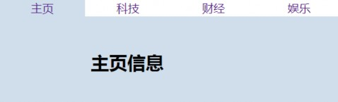
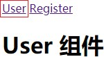
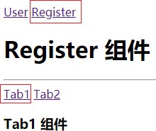
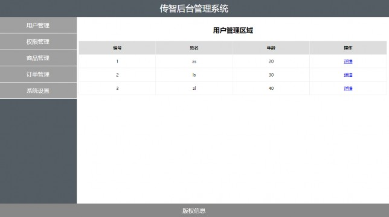

目


路由的基本概念与原理
Contents
vue-router的基本使用
vue-router嵌套路由
vue-router动态路由匹配
vue-router命名路由
vue-router编程式导航
基于vue-router的案例

 1.路由的基本概念与原理
1.路由的基本概念与原理

路由是一个比较广义和抽象的概念，路由的本质就是对应关系。
在开发中，路由分为：
后端路由
前端路由

 1.路由的基本概念与原理
1.路由的基本概念与原理

概念：根据不同的用户 URL 请求，返回不同的内容
服务器
URL地址
服务器资源内容
浏览器
后
端
路
由
后端路由根据不
同的URL地址分
发不同的 资源

本质：URL 请求地址与服务器资源之间的对应关系

 1.路由的基本概念与原理
1.路由的基本概念与原理

后端渲染（存在性能问题）
Ajax前端渲染（前端渲染提高性能，但是不支持浏览器的前进后退操作）
SPA（Single Page Application）单页面应用程序：整个网站只有一个页面，内
容的变化通过Ajax局部更新实现、同时支持浏览器地址栏的前进和后退操作
SPA实现原理之一：基于URL地址的hash（hash的变化会导致浏览器记录访问历
史的变化、但是hash的变化不会触发新的URL请求）
在实现SPA过程中，最核心的技术点就是前端路由

 1.路由的基本概念与原理
1.路由的基本概念与原理

概念：根据不同的用户事件，显示不同的页面内容
本质：用户事件与事件处理函数之间的对应关系
用户触发事件
事件函数渲染相应内容
前
端
路
由
事件处理函数
前端路由负责事件
监听，触发事件后
，通过事件函数渲
染不同内容


浏览器
用户

 1.路由的基本概念与原理
1.路由的基本概念与原理


基于URL中的hash实现（点击菜单的时候改变URL的hash，根据hash的变化控制组件的切换）
// 监听 window 的 onhashchange 事件，根据获取到的最新的 hash 值，切换要显示的组件的名称
window.onhashchange = function() {
// 通过 location.hash 获取到最新的 hash 值
}

 1.路由的基本概念与原理
1.路由的基本概念与原理

Vue Router（官网：https://router.vuejs.org/zh/）是 Vue.js 官方的路由管理器。
它和 Vue.js 的核心深度集成，可以非常方便的用于SPA应用程序的开发。
Vue Router 包含的功能有：
支持HTML5 历史模式或 hash 模式
支持嵌套路由
支持路由参数
支持编程式路由
支持命名路由

目


路由的基本概念与原理
Contents
vue-router的基本使用
vue-router嵌套路由
vue-router动态路由匹配
vue-router编程式导航
vue-router命名路由
基于vue-router的案例

 2. vue-router的基本使用
2. vue-router的基本使用

基本使用步骤
引入相关的库文件
添加路由链接
添加路由填充位
定义路由组件
配置路由规则并创建路由实例
把路由挂载到 Vue 根实例中

 2. vue-router的基本使用
2. vue-router的基本使用

基本使用步骤
引入相关的库文件
<!-- 导入 vue 文件，为全局 window 对象挂载 Vue 构造函数 -->
<script src="./lib/vue_2.5.22.js"></script>
<!-- 导入 vue-router 文件，为全局 window 对象挂载 VueRouter 构造函数 -->
<script src="./lib/vue-router_3.0.2.js"></script>

 2. vue-router的基本使用
2. vue-router的基本使用

2.1 基本使用步骤
添加路由链接
<!-- router-link 是 vue 中提供的标签，默认会被渲染为 a 标签 -->
<!-- to 属性默认会被渲染为 href 属性 -->
<!-- to 属性的值默认会被渲染为 # 开头的 hash 地址 -->
<router-link to="/user">User</router-link>
<router-link to="/register">Register</router-link>

 2. vue-router的基本使用
2. vue-router的基本使用

基本使用步骤
添加路由填充位
<!-- 路由填充位（也叫做路由占位符） -->
<!-- 将来通过路由规则匹配到的组件，将会被渲染到 router-view 所在的位置 -->
<router-view></router-view>

 2. vue-router的基本使用
2. vue-router的基本使用

2.1 基本使用步骤
定义路由组件
var User = {
template: '<div>User</div>'
}
var Register = {
template: '<div>Register</div>'
}

 2. vue-router的基本使用
2. vue-router的基本使用

2.1 基本使用步骤
配置路由规则并创建路由实例
// 创建路由实例对象
var router = new VueRouter({
// routes 是路由规则数组
routes: [
// 每个路由规则都是一个配置对象，其中至少包含 path 和 component 两个属性：
// path 表示当前路由规则匹配的 hash 地址
// component 表示当前路由规则对应要展示的组件
{path:'/user',component: User},
{path:'/register',component: Register}
]
})

 2. vue-router的基本使用
2. vue-router的基本使用

基本使用步骤
把路由挂载到 Vue 根实例中
new Vue({
el: '#app',
// 为了能够让路由规则生效，必须把路由对象挂载到 vue 实例对象上
router
});

2. vue-router的基本使用
路由重定向

路由重定向指的是：用户在访问地址 A 的时候，强制用户跳转到地址 C ，从而展示特定的组件页面；
通过路由规则的 redirect 属性，指定一个新的路由地址，可以很方便地设置路由的重定向：
var router = new VueRouter({
routes: [
// 其中，path 表示需要被重定向的原地址，redirect 表示将要被重定向到的新地址
{path:'/', redirect: '/user'},
{path:'/user',component: User},
{path:'/register',component: Register}
]
})

目


路由的基本概念与原理
Contents
vue-router的基本使用
vue-router嵌套路由
vue-router动态路由匹配
vue-router编程式导航
vue-router命名路由
基于vue-router的案例

 3. vue-router嵌套路由
3. vue-router嵌套路由

嵌套路由功能分析
点击父级路由链接显示模板内容
模板内容中又有子级路由链接


点击子级路由链接显示子级模板内容

 3. vue-router嵌套路由
3. vue-router嵌套路由

父路由组件模板
父级路由链接
父组件路由填充位
<p>
<router-link to="/user">User</router-link>
<router-link to="/register">Register</router-link>
</p>
<div>
<!-- 控制组件的显示位置 -->
<router-view></router-view>
</div>

 3. vue-router嵌套路由
3. vue-router嵌套路由

子级路由模板
子级路由链接
子级路由填充位
const Register = {
template: `<div>
<h1>Register 组件</h1>
<hr/>
<router-link to="/register/tab1">Tab1</router-link>
<router-link to="/register/tab2">Tab2</router-link>
<!-- 子路由填充位置 -->
<router-view/>
</div>`
}

 3. vue-router嵌套路由
3. vue-router嵌套路由

嵌套路由配置
父级路由通过children属性配置子级路由
const router = new VueRouter({
routes: [
{ path: '/user', component: User },
{
path: '/register',
component: Register,
// 通过 children 属性，为 /register 添加子路由规则
children: [
{ path: '/register/tab1', component: Tab1 },
{ path: '/register/tab2', component: Tab2 }
]
}
]
})

目


路由的基本概念与原理
Contents
vue-router的基本使用
vue-router嵌套路由
vue-router动态路由匹配
vue-router编程式导航
vue-router命名路由
基于vue-router的案例


<!– 有如下 3 个路由链接 -->
<router-link to="/user/1">User1</router-link>
<router-link to="/user/2">User2</router-link>
<router-link to="/user/3">User3</router-link>
// 定义如下三个对应的路由规则，是否可行？？？
{ path: '/user/1', component: User }
{ path: '/user/2', component: User }
{ path: '/user/3', component: User }


var router = new VueRouter({
routes: [
// 动态路径参数 以冒号开头
{ path: '/user/:id', component: User }
]
})
const User = {
// 路由组件中通过$route.params获取路由参数
template: '<div>User {{ $route.params.id }}</div>'
}


$route与对应路由形成高度耦合，不够灵活，所以可以使用props将组件和路由解耦
props的值为布尔类型
const router = new VueRouter({
routes: [
// 如果 props 被设置为 true，route.params 将会被设置为组件属性
{ path: '/user/:id', component: User, props: true }
]
})
const User = {
props: ['id'], // 使用 props 接收路由参数
template: '<div>用户ID：{{ id }}</div>' // 使用路由参数
}


2. props的值为对象类型
const router = new VueRouter({
routes: [
// 如果 props 是一个对象，它会被按原样设置为组件属性
{ path: '/user/:id', component: User, props: { uname: 'lisi', age: 12 }}
]
})
const User = {
props: ['uname', 'age'],
template: ‘<div>用户信息：{{ uname + '---' + age}}</div>'
}


props的值为函数类型
const router = new VueRouter({
routes: [
// 如果 props 是一个函数，则这个函数接收 route 对象为自己的形参
{ path: '/user/:id',
component: User,
props: route => ({ uname: 'zs', age: 20, id: route.params.id })}
]
})
const User = {
props: ['uname', 'age', 'id'],
template: ‘<div>用户信息：{{ uname + '---' + age + '---' + id}}</div>'
}

目


路由的基本概念与原理
Contents
vue-router的基本使用
vue-router嵌套路由
vue-router动态路由匹配
vue-router命名路由
vue-router编程式导航
基于vue-router的案例


为了更加方便的表示路由的路径，可以给路由规则起一个别名，即为“命名路由”。
const router = new VueRouter({
routes: [
{
path: '/user/:id',
name: 'user',
component: User
}
]
})
<router-link :to="{ name: 'user', params: { id: 123 }}">User</router-link>
router.push({ name: 'user', params: { id: 123 }})

目


路由的基本概念与原理
Contents
vue-router的基本使用
vue-router嵌套路由
vue-router动态路由匹配
vue-router命名路由
vue-router编程式导航
基于vue-router的案例

 5. vue-router编程式导航
5. vue-router编程式导航

声明式导航：通过点击链接实现导航的方式，叫做声明式导航
例如：普通网页中的 <a></a> 链接 或 vue 中的 <router-link></router-link>
编程式导航：通过调用JavaScript形式的API实现导航的方式，叫做编程式导航
例如：普通网页中的 location.href

 5. vue-router编程式导航
5. vue-router编程式导航

常用的编程式导航 API 如下：
this.$router.push('hash地址')
this.$router.go(n)
const User = {
template: '<div><button @click="goRegister">跳转到注册页面</button></div>',
methods: {
goRegister: function(){
// 用编程的方式控制路由跳转
this.$router.push('/register');
}
}
}

 5. vue-router编程式导航
5. vue-router编程式导航

// 字符串(路径名称)
router.push('/home')
// 对象
router.push({ path: '/home' })
// 命名的路由(传递参数)
router.push({ name: '/user', params: { userId: 123 }})
// 带查询参数，变成 /register?uname=lisi
router.push({ path: '/register', query: { uname: 'lisi' }})

目


路由的基本概念与原理
Contents
vue-router的基本使用
vue-router嵌套路由
vue-router动态路由匹配
vue-router编程式导航
vue-router命名路由
基于vue-router的案例

 7. 基于vue-router的案例
7. 基于vue-router的案例


案例：后台管理路由案例


 7. 基于vue-router的案例
7. 基于vue-router的案例

案例分析

路由的基础用法
嵌套路由
路由重定向
路由传参
编程式导航

 7. 基于vue-router的案例
7. 基于vue-router的案例
案例分析

抽离并渲染 App 根组件
将左侧菜单改造为路由链接
创建左侧菜单对应的路由组件
在右侧主体区域添加路由占位符
添加子路由规则
通过路由重定向默认渲染用户组件
渲染用户列表数据
编程式导航跳转到用户详情页
实现后退功能